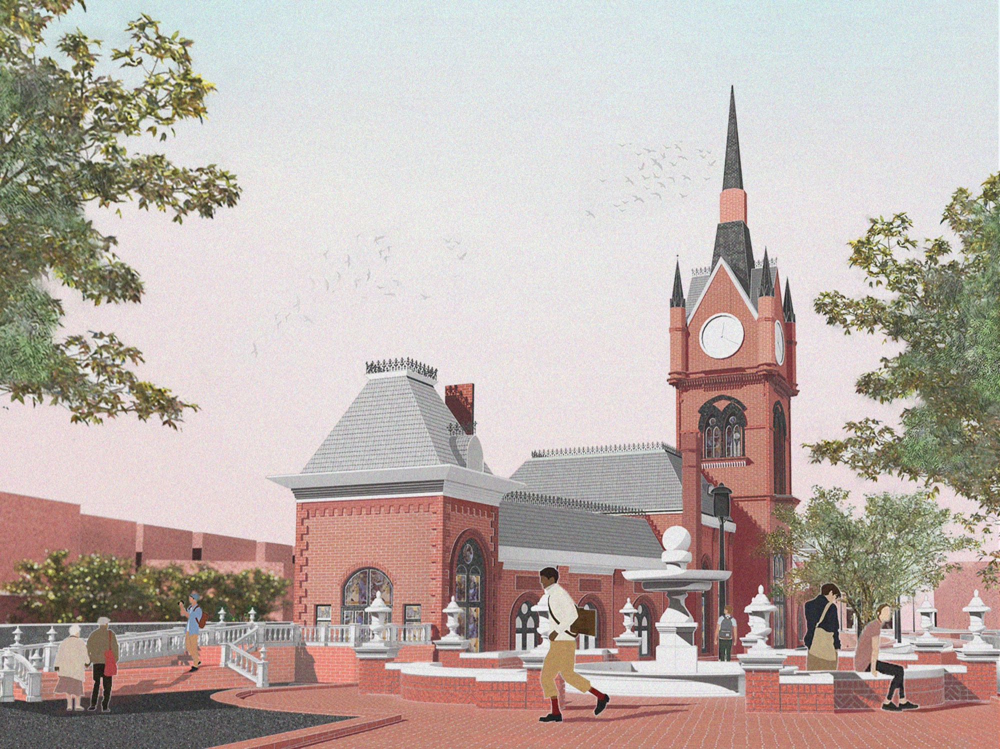
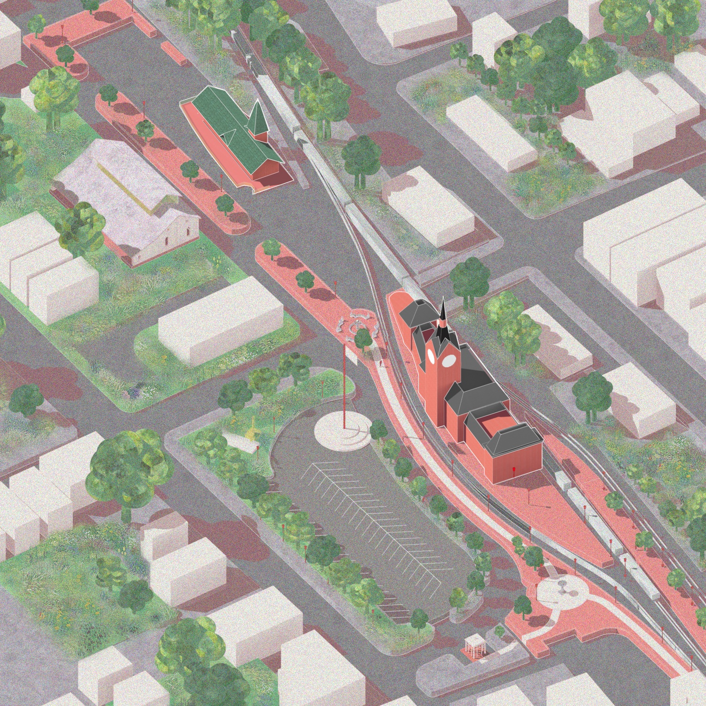
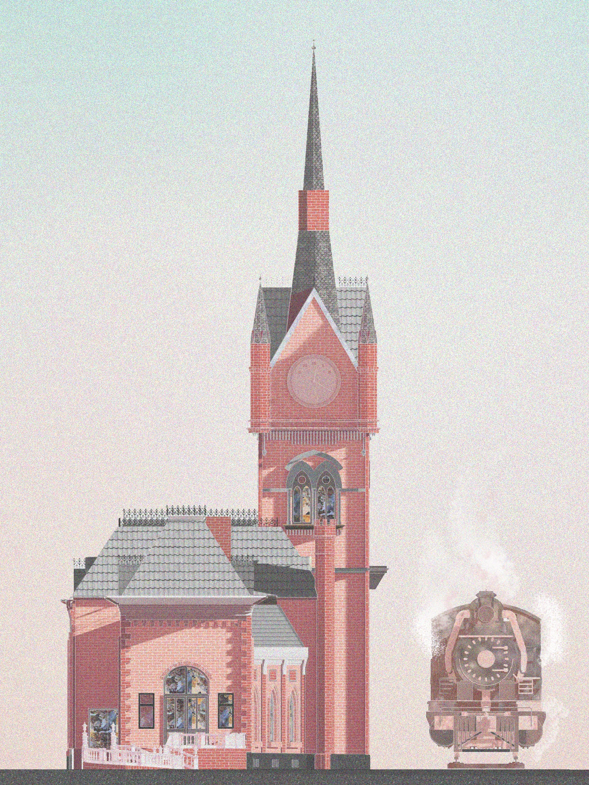
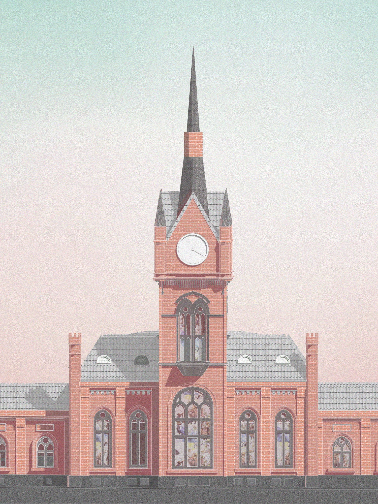

Projects
Design renderings for the Colebrookdale Railroad station. The Gothic Revival brick building — with its clock tower, steeply pitched spire, and arched windows — is documented in perspective, site context, and elevation, with a steam locomotive placed alongside the platform.


Site plan axonometric — station building and rail corridor within the surrounding neighborhood.

Elevation — clock tower, spire, and stained glass windows; steam locomotive at platform.

Front elevation — symmetrical composition with central clock tower, dormers, and arched entry.
Return to Projects